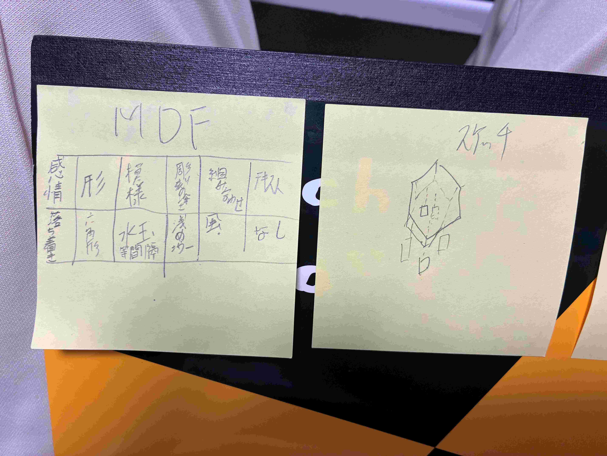
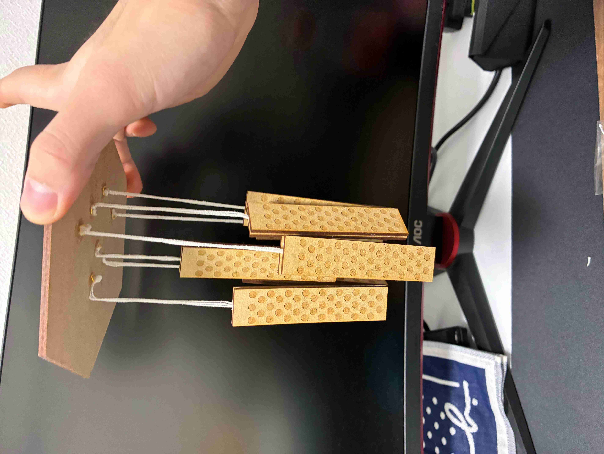

木製風鈴
紹介
日々の生活に落ち着きを求めて作ったのがこの風鈴です。
舌（ぜつ）と本体を同じものとしてみて、さらに私が思う落ち着いた柄である水玉模様を入れることで
より人の心を動かせるような作品を作りました。
写真
構想段階

作成後

反省
レーザーカットのやり方を見ていったが実際にやるときはほとんど助けてもらったこと。
台から舌と本体を垂らすために糸を垂らす場所を作るのを忘れていて瞬間接着剤で無理やりくっ付けたこと
この反省を生かし次回からの課題に生かす。